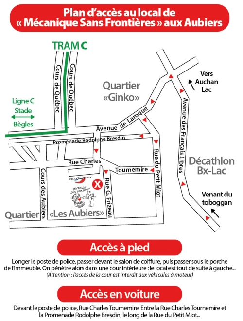

Mission
L'association a pour objet de favoriser et d'appuyer, localement et dans les pays en développement, notamment dans les pays francophones, les projets techniques de développement endogène dans les domaines mécaniques, artisanaux, énergétiques, des transports et de l'agroalimentaire.
Statuts de l'Association "Mécanique sans Frontières" - Article2 : Objet
Histoire
Ce groupe de motards, pour la plupart originaires de Bordeaux et de Biarritz, constitués en association, fédère rapidement autour d’eux des gens de tous horizons, jusqu’à 180 adhérents, en particulier des africains qui en profitaient pour faire connaître le pays qu’ils avaient quitté mais qui restait cher à leur cœur. Tous s’investissaient déjà dans le développement de projets industriels et artisanaux, comme le voulait Philippe Puyo, dans des pays du Sud avec un souci de responsabilisation, et d’écoute. Les adhérents d’origine africaine ont été à la base de missions et de projets en direction de leurs pays d’origine. (Sénégal, Cameroun…) De plus, l’association apportait son soutien, financier et logistique à des projets portés par d’autres associations qui devenaient ainsi partenaires.
AU DEBUT, l’association avait son siège social 17, Cours Saint-Louis à Bordeaux et, bénéficiait d’un vaste hangar situé Quai de Queyries à Bordeaux Bastide, mis à sa disposition par le Port autonome de Bordeaux : c’était là leur « base ». Là, ils regroupaient du matériel. Là, ils chargeaient des containers. Là, les adhérents pouvaient faire de la mécanique et des réparations diverses. Là, ils mettaient leurs vastes locaux à la disposition d’autres associations, culturelles ou théâtrales qui avaient besoin d’espace pour réaliser des décors ! Ils se débrouillaient, quoi !!!!…….. pour aider les autres. La vie associative était intense……… avec des réunions, fêtes et repas, informels et sympathiques au bord de l’eau !!!
Dès les premiers temps, ils veulent leur « feuille de chou » !! Ainsi naît le « PETIT A PETIT », le même journal qu’aujourd’hui qui en est à son numéro 201 !!!
En 2001 le Port Autonome, reprenant ses locaux, l’association a dû migrer et trouver un autre site où s’installer. Ce qui fut fait 7, Avenue de Labarde dans le quartier de Bordeaux Bacalan où l’association a toujours son siège et ses activités. Au départ, le local, en plus d’être un lieu de réunion et d’activités, comportait une vitrine où s’entreposaient les dons divers qui servaient à alimenter les containers pour les projets. Peu à peu, une boutique de solidarité a vu le jour, accessible aux gens du quartier qui, en échange d’un don modique, trouvaient leur bonheur dans cette caverne d’Ali Baba. La boutique est toujours là, l’équipe aussi bien renouvelée.
Boutique
Comment fonctionne notre boutique et à quoi sert-elle ?
Des gens nous amènent des objets ou des vêtements dont ils n’ont plus besoin, mais qui sont encore en assez bon état. Tout ceci est trié, réparé éventuellement et mis en vente à la boutique. En revanche, nous refusons tout ce qui est sale ou endommagé.
L’argent de la vente de ces dons représente une part importante de notre budget, en plus des cotisations des adhérents. Ce budget nous sert ensuite à financer des projets d’aide au développement dans des pays étrangers, en Afrique essentiellement pour l’instant.
Depuis Octobre 2017, l’adresse de notre siège et de notre boutique est la suivante
127, Rue Charles Tournemire
Les Aubiers – 33300 Bordeaux

A la boutique, vous pouvez joindre Sandrine grâce aux coordonnées suivantes
Tel : 05 56 39 67 30 – Mail : mecasf33@gmail.com
Sandrine est présente à la boutique du lundi au vendredi de 14H à 18H
Journal
Notre revue "Petit à Petit" est publiée une fois par trimestre et raconte toute la vie de "Mécanique sans Frontières": vie associative et missions de solidarité à l'étranger.
Elle permet donc aux adhérents d'avoir des informations sur les projets et les missions de notre associationà l'étranger, essentiellement en Afriqueactuellement.
Elle peut donner aussi des informations générales sur ce qui se passe et se décide au cours des réunions mensuelles, des Conseils d'Administration et del'Assemblée Générale annuelle.
Cette revue est donc, en plus du Blog , un lien entre le Bureau et les adhérents.
Nous faisons imprimer cette revue en "version papier" que nous envoyons aux adhérents par voie postale et une "version numérique" est proposée à ceux ayant accepté cette formule en France et dans les pays où nous réalisons des projets.
De plus, le titre de cette revue trimestrielle traduit très bien notre action : en effet, "petit à petit", notre ambition est de faire, même lentement, le maximum pour aider, et de le faire d'une manière tenace, car les obstacles sont souvent grands et imprévisibles.
A propos
Dernier numéro (juin 2020)
Tous les numéros
Partenaires
Soutenir
Lien